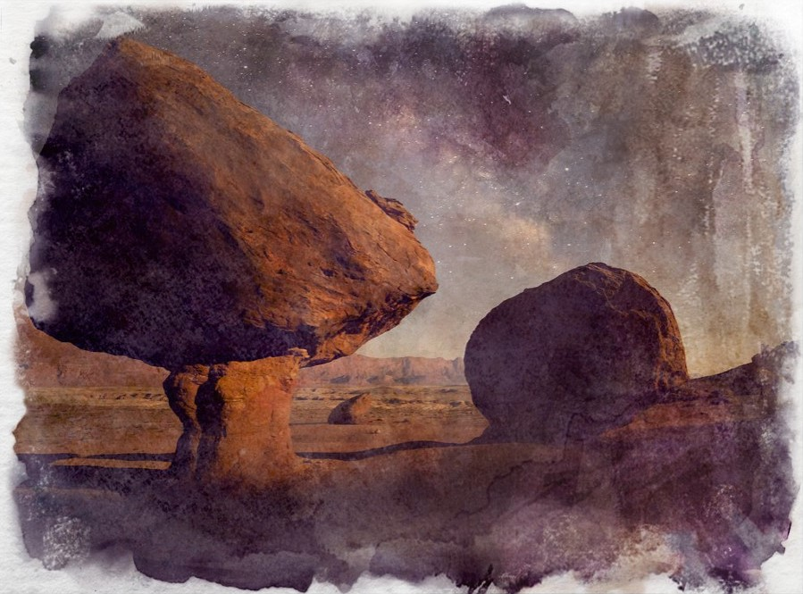

Marble
Formed by heat and chemical changes deep underground, it is easy to carve and resistant to shattering. Marble is many artisans stone of choice with a rare luminescence that gives it a sheen. It is rare and can be used for construction but at great price.